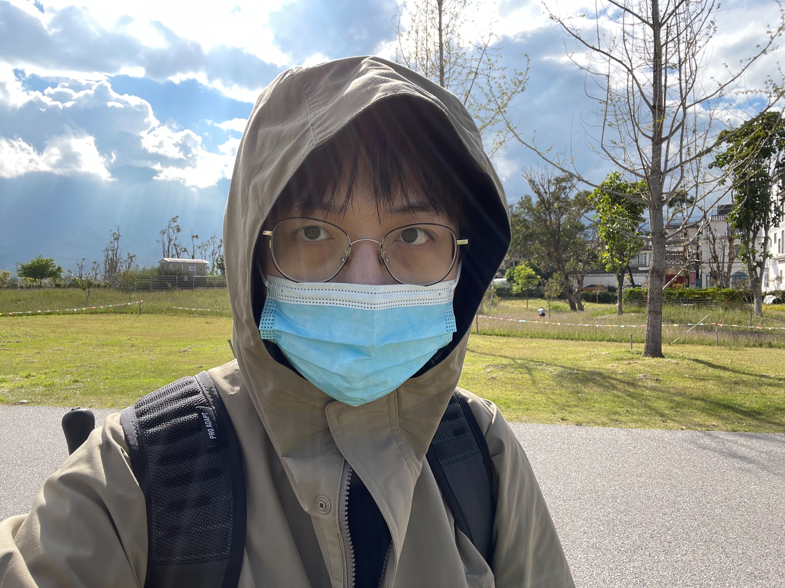
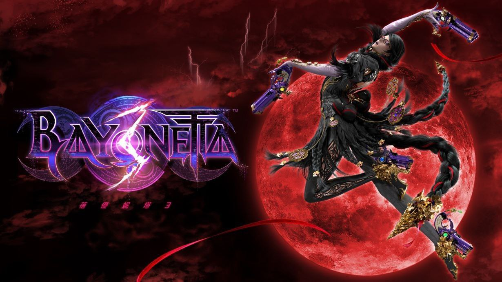
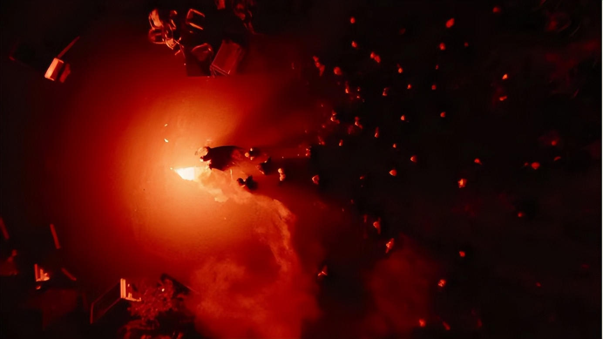

今之视昔亦如昔之视今，历史会记住
又到了写年终总结的时候了，虽然我说了「又」但是其实我似乎好几年都没有写过所谓的年度总结了。尤其是最近几年每到年终岁末人总是特别的颓唐，总是打好了蛮多的腹稿，然后又在犹豫要不要写的状态下拖了过去。今年整体状态看起来好了一些，虽然前一阵不可避免的得新冠了还有些咳，但是精神状态上总觉得比前两年要好很多，再加上今年的一系列事件总觉得身处时代不保存记录是可耻的，所以就打算动一动笔做一下整体的回顾。
说今年的际遇比前几年还要好，听起来其实有点过于离谱，因为众所周知今年发生的各种悲剧性事件太多了。不过这种反直觉的逻辑大概是这样的，其实在这个时代被拖进新冠的泥淖前，我是的精神压力和特别颓其实是蛮「后现代性」的。我在很多大事上运气不错，但是当真的毕业工作处于一个社会分工特别细节的岗位的时候尽管收入不错，但那种你一个人做不到很多事情的无力感是很明显的。从这个角度来说，我多多少少能感受到你马克思（真的那位，别和我谈苏联的二手货或者洼地的三手货）老师谈到的「异化」的原意，所谓的「自由而来的不自由」。你有一定的自由分工、自由迁徙的能力，但是正是由于深度的投入到了某个社会分工内而被困在了这个环境下的「不自由」。这个角度上说起来真的很矫情啊，另外一方面就是我感觉自己的水平底线对一份这种工作还是比较绰绰有余的，所以我大部分时间不太需要很多精力就能完成而且还能做的比较好。
所以我的 18、19 年的状态基本是就是在工作和高强度游戏之中切换，可以说那两年不写这种年终总结是真的亏了，那两年我基本上每个季度的 3A 游戏我是一个没落的玩了，当然因为是感觉无力才想要把时间都投入到高强度游戏之中，当然旅游出行是完全没安排上的。那个时候真的是出国旅行最好的时候啊，现在想想都很后悔。到了 20 年的时候，或许是属于那种你越不让我干什么我就想干什么的反骨，再加上那个时候工作真的也挺让人烦躁的，反而是借助随心飞这种产品在国内飞了好几十次，去了好多国内没有去过的城市。其实回顾历史记忆是一个非常令人惊诧的事情，那个时候的出行管制完全没有今年这么严格，除了一个健康码的检查之外从来没听说过核酸检测这种东西（？），在杭州、上海、武汉、成都、重庆甚至武汉这些地方不戴口罩的人都比比皆是反而北京是控制最为严重的地方，但是当然如果你真的在事实上传播了病毒还是会被认为是群众里的坏人的。21 年明显开始管制就变得非常严格了，后半年似乎需要核酸检测证明才能出门包括回家，我年末因为这个太麻烦了都没有回家。
到了今年，我们总算领教了控制措施的严格，今年四月为了进办公楼上班做了人生第一次核酸，怯生生的在核酸亭前把嘴张开为权力口交。当然抛开观点只从结果来看在北京的某些地区生活其实是三年内被实际严格管束最少得地方，让我想起茶馆的那句名言**「要不是条狗也得托生在北京城呢」**。这里面的原因当然颇为复杂，这里皇天贵胄多，哪怕是普通人不识你那茬的人也颇多，大量的老头老太太都处于三年连健康码都没有的状态中。某种程度上来说，这种非暴力不合作的环境，其实也给年轻人一些方便。比如在上海被执行的很严格的垃圾分类，在北京根本就没人叼的。19 年那时候社区的一个大爷让我签一个垃圾分类同意书，我还打算找个桌子好好签个字，大爷直接说：「小伙子别那么认真，我们也就随便搞搞别太当回事嗷」。所以在这种上行下效下，百京实际的控制状态也是不太严格的，我想喝过猫猫头狼奶的一代人的「斗争哲学」大概就是这种反权威吧，反到吞噬自己。在这种新封建环境下居然能令人受益，真是令人感叹。
说了这么多其实是想说，20 年之前我的颓是「现代性」的颓，是资本社会高度分工带来的无所适从。而这之后的颓却恰恰是「前现代性」的颓，是出于生存本能的应激行为，感谢叔叔把我从现代性中解救出来拉回前现代之中，我谢谢叔叔八辈祖宗。在这种环境下这几年我大量阅读了很多回忆录，这使得我也在思考身处于特殊的历史阶段（当然哪一段历史阶段都很特殊）人们是有必要记录一些东西的，当然时代内的记录都会有时代的局限性但是依旧是一个非常重要的研究历史的视角。于是我下单「Day One」，偶尔想到、遇到一些事情就会在手机或者电脑写点什么权当做是日记。
这么多可算写到今年了，回顾今年给人的感觉就是事情非常的多且繁杂。甚至几次和朋友聊天互相回忆的时候，都会诧异「这件事居然是今年发生，我还以为是去年的呢」。横亘数个月的上海的防疫灾难自不必说，作为你老钟最发达的城市自然是声量最大。其实我在三月爆发前夕的周末正打算去上海出差，是及时发售的艾尔登法环和懒惰救了我，如果我经历了那一切可能回忆的调子还要高几个八度。除此以外，我们来思考一下今年还有哪些事情呢？
山西雨灾、郑州雨灾、河南村镇银行暴雷、南京银行暴雷、恒大暴雷、乌鲁木齐火灾、贵州大巴侧翻、东航飞机直挺挺坠机、降雨少导致的西南大断电、富士康逃荒 …… 以及各地产生的悲剧故事，这个列表还可以列的很长很长。是不是对很多人来说回忆起来已经有些应接不暇了？都快靠灾难搞出信息爆炸了，对很多人只能记住很多和疫情相关的事情，但是比如飞机坠毁这件事从性质到造成的影响明显都要更离谱一些、郑州的水灾在城市的地铁里出现遇难人群也给城市人口留下更多基于生活现实的恐惧……
抚今追昔这是一种更不一样的无力感，而且你也不知道未来会怎么总结这段时间的故事写进历史，会以哪种叙事来撰写。
活在时代中的人只能做到不要忘记。
做了很多回忆，总结也要写一写，今年看了不少书、打了不少游戏、技术、个人状态都有很多的变化，可以写写流水账的，其中不乏有值得推荐的东西。
大理出行
先从最开心的 part 开始吧，今年的严格管控下能出去的机会不多而且风险很高。因此能说的上出行的应该只有五月份北京防疫严格之后回家呆了一个半月、另外就是十一国庆去大理呆了一段时间。那除了回家今年能称得上算是旅游的可能就只有去大理了，不过我对大理这次出行本身还是颇为满意的。大理本身商业化了蛮多年，局限的范围还是相对窄的，洱海治理的也很好可以说本身风景的底子就很好，以纯欣赏风景的角度很值得一去。
洱海
廊桥：

夜景：


古城
奇怪的色调滤镜，但是感觉还不错：

Cat:

骑行
除了在大理逛了蛮久之外，还有一个创举就是分了两天骑行了 130km+ 来环洱海骑行，然后回古城就发了一天烧 orz
疯狂防晒的人：

去了之后可算是知道为啥所谓 Web3 人在这扎堆了，这里真是个低成本的躺平、生存的好地方。之前讲过一个段子：搞 Web3 的人赚了钱的在美帝、在赚钱的人在新加坡、没赚到钱的人在大理。
段子当然是段子了，不过对我来说在大理这段的时间确实是躺平放松的一段好时光，去的时候苍山还没有雪所以就没有去，希望之后有空可以去看雪。
游戏
根据我的 Trello 表格统计，今年一共玩过四种平台（PS5、XSS、PC、Switch）的 19 款游戏。我对游戏「玩过」的定义基本要求是通关，优秀游戏的上限是拿白金杯。以以往几年打游戏的数量来说，今年玩的游戏其实不算很多，主要是过去几年大作雷过的 case 实在是比较多，虽然我基本没有踩坑（唯一的应该是 Epic 买了号称次时代的众神陨落）但是在入手的时候明显会更为审慎一些。今年 PS5 上的独占游戏又是基本落灰的节奏，不过对于只有 2060 PC 的我、面对众多次时代的游戏渣优化，PS5 还是拯救了我很多的。今年因为在家呆了一个半月，在家入手了一个不错的 4k 显示器和一个 XSS，买 XSS 主要是为了低成本玩 XGP 上面的游戏，当然主要是也是因为在 LinkedIn 打工的朋友送了他们公司每年发的 XGP 激活码（微软系公司真好呀！），所以在这方面的打游戏成本进一步被摊薄了，XSS 虽然性能一般但是够用就行了。
下面盘点下今年玩过的游戏，游戏打算按照推荐程度：
GOY: 艾尔登法环 [白金]

对我来说今年的年度游戏肯定非《艾尔登法环》莫属了，今年 TGA 和蛮多的游戏年度奖项也都颁给了它。事实上，今年这个游戏出现的时候，基本就已经在我这内定年度游戏了，并不存在战神 5 和它竞争的问题（当然从结果来说战神 5 在这方面确实差了一截）。《艾尔登法环》的优秀其实是从去年12月22日的主机内测就已经体现出来的，内测只展示了非常有限的「宁姆格福」的区域以及「史东薇尔城」的第一个 Boss 区域。最开始很多人觉得内测提供这些地方，会不会全部的地图大概也就是 3-4 个流程的大小（根据以往 soul-like 的游戏规模），但是经过数据挖掘以及在一个空气墙的特殊位置的逃出地图，我们看到了起码「宁姆格福」的区域就已经大的夸张了。
事后证明全部地图大概在内测开放区域的 15 倍左右的大小左右，实际上当人们第一次完整探索「史东薇尔城」就是已经发事情不对了，这个区域实在是太大了。但是跟着剧情一步步探索，你会发现更为巨大的「湖之利耶尼亚」、「盖利德」这些完结之后感觉差不多应该结束了，结果还有高原、有天空城、还有几个等大的地下地图以及更多的地穴探索。
宫崎英高再次用《艾尔登法环》证明了，开放世界也是能治好游戏爆炸年代的「电子 ed」的。这个游戏是过去所有 soul-like 游戏的集大成作，用充满探索感的地图塞爆你大脑的方式来治疗「电子 ed」真的太夸张了。这个游戏在玩的时候其实长期让我处于一种患得患失的状态之中，很担心玩完了之后再也玩不到这么好玩的游戏了，事实上今年也确实在没有能望其项背者。
GOY ACT：猎天使魔女 3 [🐂]、师父 [白金]

- 猎天使魔女3：这个游戏出在本年度比较晚点的时候，但是却并不逊色。如果说《艾尔登法环》本身使用探索内容来塞爆人的大脑，对于《猎天使魔女 3》来说就是使用玩法来塞爆。作为一个已经有两作珠玉在前的游戏，通过使用平行宇宙贝姐的设定，一次性疯狂的引入了7、8种完全不同的武器和攻击模式，而这些东西根本不是你必须使用的技能。优秀而非必须得内容、玩法，这种只能用「奢侈」形容的特性似乎是这几年的优秀游戏的特质。不过猎天使魔女这个游戏的 ACT 炫技属性实在是太强了，我只能保证通关，练习全成就或者打全紫月（最高评价）对我来说实在是太难了。（女儿的 part 不太好玩，技能都不太好用）

- 师父（sifu）：相比于猎天使魔女的传统酷炫 ACT，师父是非常简练的一招一式的白眉拳过招，想要玩好你需要对自己的技能、敌人的技能都相当熟悉。并且这个游戏还有一个非常新奇的设定，就是主角以 75 岁为年龄上限（当然也有另一个维度——死亡次数的限制）。每次在游戏中的死亡都会导致年龄增长，年龄增长会让攻击力更强但是人也会更为脆弱。但是这个游戏的全成就是有 25 岁通关的，所以就变成了一个非常地狱的背板战斗练习场，从完全打不好的新手进化为每一关都能不死通关直到打倒最终 Boss 。不过战斗本身的有趣，对自己的提升其实能一定程度缓解这个过程。这个游戏拿了白金。
GOY 解谜游戏：Death of Loop [80% 成就]
Death of Loop 就是我需要感谢 PS5 的那种游戏（Elden Ring 也是），我之前买了一份 Steam 版本，结果首日优化在我弱小的 2060 上实在是帧数太惨了。退了换了份 PS5 版本，优化就非常厉害了。死亡循环对于制作组 Arkane 以前的作品《耻辱》类似的潜入 + 动作冒险的游戏进行了大幅简化，故事简化到一个多个使徒不断复活岛屿，只要不把所有人在一天内全部消灭就会不断地循环。最开始一天过去可能都无法刺杀一个使徒，但是在循环过程中你会不断发现城市的秘密，积攒技能和更好的武器，直到你发现他们的生活轨迹可以通过一些方式在一天内击杀的机会。
事实上死亡循环内的解密元素很稀薄，因为多数的解密都会有任务提示，这也是 Arkane 对销售市场的一种妥协。不过他们就是有这种魔力，能让你通过不断发现新的秘密的方式觉得是自己解决了问题（笑），再加之这其中的玩法非常自由、Arkane 本身的 FPS 基础水准毋庸置疑。这个内容量不是很大的游戏，非常好玩。
Great RPG：战神 5 [白金]、如龙 7 [普通通关]
战神 5:
2018 年的战神 4 的全程一镜到底的设计让这个老 IP 焕发出了新生，在故事上让在原作中滥杀工具人的奎托斯有了新的羁绊，在北欧冒险的故事和场景设计都非常优秀，是我 18 年绝对的年度游戏。不过今年的战神 5 在我这里只能拿到优秀了，当然战神 5肯定是那种当世前几的 ARPG ，但是整体上针对 18 年的升级还是不足够的大。当然从 PS4 Slim 和 PS5 的帧数、画质体验还是有很大提升的，但是可能上一作已经足够的好了，没有新的惊艳之感了。
今年这作的战斗和上一作的提升也很小，堆怪的场景更多了一些，而且所有技能都要重新学习这一点有点在剧情上难以自圆其说。当然最大的问题在游戏剧情的后半段，在诸神黄昏前游戏一定删除了大量的剧情内容，游戏部分的支线剧情非常的丰富，但是在主线的最后如此的潦草非常的不正常。
如龙 7：
第一部改成回合制的如龙，战斗其实一般。不过故事有一种胡逼的快乐，如龙的剧情一贯有很多难以自圆其说的部分，但是放在桐生一马身上很怪的事情放在本身就很怪的春日一番身上就非常的顺畅了。不过我这几年对 jrpg 一贯兴趣一般，传统的 jrpg 太耗费时间了，很容易打不完。不过如龙 7是 XGP 玩的而且战斗现代很多、PC XSS 还能相互 sync 存档，让我能够坚持的打完了，下一作还打算白嫖 XGP。
有趣的刷刷刷 & 肉鸽游戏：吸血鬼幸存者 [96%]、暖雪 [白金]
吸血鬼幸存者：
看来 XGP 不适合这种可以玩几百小时的刷刷刷游戏，主要是有出库的一天，而且 XGP 买 DLC 也比较麻烦一些。所以我在 XGP 体验了一下之后，就赶紧趁着 DLC 出在 Steam 买了一个开始刷刷刷。吸血鬼幸存者的内核非常简单，类似「坚持 XXX 秒」的刷、躲、杀怪的机制加上类似以撒的装备、技能叠加方案来组合。实际上设计难度是没有其他的肉鸽刷刷刷难的，研究了下代码还是 web 技术做的（挺有趣），但是真的就是爽。研究明白装备适配之后这个游戏就变成一个放置游戏了，全靠自动机们自己玩下去，其实就可以了。想到读书的时候我也做个一个有点这个风格的东西：https://github.com/lfkdsk/FighterTheater ，似乎还有人改造成 ML 版本发了 paper 了，可惜没有这方面的游戏开发头脑啊（
暖雪：
印象后来出了 XGP ，不过我很早就在 Steam 上买了 + 全成就了。整体上给我的感觉比较接近以撒的国产版，得说脱离了类克苏鲁那套道具之后，国产仙侠这套道具也挺酷的，不过明显感觉各套 build 之间的难度差异确实实在太大，很多 build 都玩不到后期，这个之后不知道有没有做调整。之前打全成就刷的我有点疲劳了，后续似乎出了一些新的内容我就没有继续玩下去。
其实我还用 XGP 玩了一阵那个《哈迪斯》但是感觉后期刷的元素太多、肉鸽元素又有些太少了不太想玩了。
一些其他游戏
- 汐：PS 上玩的老平台跳跃了，随便通关了下。
- 星之卡比 探索发现：在 switch 上拿了全收集、还精于卡 bug，不过其实对这作没有特别深的印象，我更喜欢 2D 的卡比（马上就会有一个重置版了）。
- 枝江畔之梦：A 友发病之作，但是质量还是挺高的，今年 A 🤚发生了很多事情再看确实令人感叹。
- 风信楼：一个有些女性向纯爱的 galgame，还有很多经济、剧情的运营部分。感觉还是挺有深度的，可以一玩，好像后面还更新了搞基。
- 蒂德莉特的奇境冒险：XGP 随便打了打通关的横版冒险游戏，可玩。
- 海贼王无双：通关了，无双游戏，主要是熟悉了下海贼的剧情。
- Tunic：所谓的狐克，是一个各方面都有点像塞尔达织梦岛的游戏，节目、场景设计都不错，不过玩的有点急。
- 忍者神龟：今年出的横版过关，我觉得有点一般。。
- 龙珠格斗 Z：XGP 玩的，感觉就剧情有点弱智，没玩下去。
- 卧龙（Demo）：忍者组在仁王2之后搞得三国背景的仁王like游戏，玩了 demo 比较期待明年三月了，不过 demo 测试阶段有不少问题希望能修好。
- 廖添丁：台湾民间传说「廖添丁」的故事的横版动作冒险，XGP 玩的游戏质量不错，不过战斗难度比较一般（拿了接近白金）。
阅读
Trello 的统计今年读完的书大概有 33 本书，今年的阅读速度还是很快的（当然也是在这里花了很多时间）。可以分成以下几个部分：历史分析普及读物（刘勃的书基本读了一遍）、女性主义读物（只读了三本上野千鹤子）、各个特殊历史时期的历史、政治史研究（这个内容非常杂了，研究、回忆录、史料综合）、一些我比较喜欢的宗教、民俗书籍、一本连载网文。我读的书大多数都没有豆瓣页面，而且不是所有书的印象都比较深刻，这里凭感觉写点评价。
历史读物
秦制两千年
第一次看到这个书名的时候，让我想起另一本类似的书名「其实我们一直活在春秋战国」，两本书有一些共同的地方但是又走向不同。《其实我们一直活在春秋战国》这本书主要的观点，其实是在向我们展示在春秋战国思想大活跃之下到底诞生了哪些影响未来中华文明走向的思想，而后续的历史并没有对这些思想有非常大的发展，古人「好古」的传统阻碍了思想进步，似乎也在主张我们的思想文艺复兴来的颇早。
而这本书《秦制两千年》主要在向我们展示中国历史多数时候都在以「外儒内法」的思路进行治理，儒家多数时候只是一个冠冕堂皇、忠孝仁爱的幌子，而在实际的治理方法上完全使用了法家的方式 —— 所谓的「秦制」。而「秦制两千年」也意味着我们也依旧生活在这种环境之下，这不得不使我想起猫猫的名言「我是马克思加秦始皇」，从之后对其的正名来看他确实蛮欣赏秦始皇的。
本书夹叙夹议的部分探讨了秦制的目标政治制度，即：追求可替换的官僚机构进行管理、尽可能攫取民力追求社会的散沙化和原子化。而这些事情真的能完整落实成完全体，或许也正式需要一个有较为发展的经济和科技的时代吧。我在读这本书的时候随便用一个新闻来套用这套理论：之前在新闻里看到某地「不赡养老人要加入征信」，那么我们可以来思考了用行政力量来约束人赡养父母在对追求官僚化、原子化、攫取民力的政府究竟有什么好处？这是典型的「以法治孝」至此我们做下类比：
- 国家试图攫取民力 => 来自秦制的顶层设计 =>对应现实攫取廉价劳动力
- 因此国家不愿意为养老提供成本 => 对应显示「养老不能靠政府」
- 秦人不孝的传统=>来自于过于攫取民力 + 上层设计的下渗 => 社会上出现了不愿赡养父母的人
- 不愿付出成本=>「以法治孝」=> 不养老加入征信
可以看出我们其实很容易把这套理论套用在我们的现实之中。如果读完本书相对商鞅的那些畜生理论有更多的了解，可以直接去读《商君书》。「秦制两千年」也属于那种好用的棍子理论，好用但是并不严谨，每个朝代在「秦制」方面都多多少少有些区别，很难直接一概而论，不过这本书仍旧非常推荐阅读下。
祥瑞 —— 王莽和他的时代
这几年评价比较好的历史读物多半都有这样的背景，文字本身容易阅读的同时本身作品的思想来源参考了非常多最新的学术成果，也能提出一些自己的理论观点。对我来说最为重要的部分来源于撰写这种历史读物的历史视角 —— 我们都太容易带有现有的视角来看待古人了。在近几十年的大众舆论里，王莽是革命者、是篡汉者、是现代思想的穿越者，但这些都离王莽偏离的非常的远。那些看起来似乎非常所谓「社会主义」的主张，本身就是儒家的追三代圣王的理想，一个缺乏治理经验的阴谋家大儒做了些蠢事罢了。
这本书对我来说最为有趣的 part 其实作者在讲述王莽的故事之外其实试图在书中梳理儒家思想在西汉的发展脉络，但是也是从这个时间开始，儒家从来也没有符合过帝国体制的治理的。儒家多数时候更像是一种理想性的思想，它约束自己、约束帝王、也试图约束帝国整体，却未曾提供一个真的可以实施的治理手段，那么结果就是不可避免的倒向外儒内法的帝国治理方式。王莽的时代历史还太短，无论是已有的统治集团还是试图篡汉的王莽都不足够了解真正实行所谓的「独尊儒术」会发生什么 —— 儒家的圣王理想会不断地激发各种极化发展，无论是笃信五德始终让人帝王本身同意禅位为统治增加不稳定的因素、还是王莽在理想的推动下的作茧自缚把自己推向灭亡。本书用祥瑞为名谈王莽，又不仅是谈王莽。
刘勃的一堆书
《小话西游》、《两晋：风流总在雨打风吹后》、《司马迁的记忆之野》、《不是东西》、《传说中的大唐》、《天下英雄谁敌手》、《匏瓜》、《失败者的春秋》、《世说俗谈》
刘勃老师是我今年阅读的单一作者数目最多，以前第一次阅读他的书应该是在前几年买了一本《战国歧途》。我很喜欢「杨朱哭衢涂，此夫过举蹞步，而觉跌千里者夫！」这个典故作为标题，另外一方面也为刘勃的行文、视角、笔力而倾倒。这也要回到之前说的那个观点，这几年畅销且质量不错的历史读物都做到了行文晓畅的前提下尊重新的学术界观点和历史挖掘的新发现。因此今年也是读了刘勃另外的九本书，这些书都有一些我非常欣赏的特点：
- 讲故事能力出色：这些书本身取材的史料其实都很短，但是能够通过短短的史料截取给读者展示历史隐藏在幕后的一些深意，毕竟最后能落到史料里的东西都已经是结论了（还多半代表了胜利者的历史叙事）。比如《失败者的春秋》、《战国歧途》都是站在了最后统一六国的秦的对立面，来解读这些作为失败者的国家的历史，最后串了一条主线来归于秦的「歧途哭返说战国」。
- 回归历史视角：当人们回顾历史的时候经常会有一种用现有的视角（多半是一种官办历史的主流叙事）、现有的价值观（随着社会发展的结果）来看待历史之中的故事和角色，但是作为一个活在一个真实历史之中的人的视角当然是和后面回顾的俯视角度是不同。比如《司马迁的记忆之野》的史料摄入其实非常少，毕竟司马迁本人的材料实在是太少了，但是有很多我们错过的视角，例如：汉代人的生死观究竟是如何、父亲参与封禅又为何被突然贬斥、汉代人对武德始终的观点（他们认为自己直接上承三代，秦代被认为是一种乱政，没被算进历史）。汉武帝的时间线非常乱，直接看史书乱作一团，这本书尝试用司马迁的视角来看汉武帝时代就很特别。《匏瓜》本身作为孔子的传记，孔子世家那么短的文字，能阐发出这么多的内容试图去抛开历史的迷雾来试图还原孔子的真实生活视角。
这里面如果从我个人的推荐逻辑，我会比较推荐优先读新作《世说俗谈》，很喜欢世说新语的典故因此对其的解读也比较喜欢。除此以外可以优先看《匏瓜》和《司马迁的记忆之野》，来看看试图还原视角下历史是怎么读的。其他的几本书我也很喜欢《天下英雄谁敌手》对三国叙事的剖析、《传说中的大唐》借助唐传奇的文本分析来讲唐朝的故事也都非常的精彩。
漫长的余生：一个北魏宫女和她的时代
命名和《祥瑞 —— 王莽和他的时代》有些异曲同工的部分，书表面上是通过平民视角来描写时代，但是真的读过之后你会发现「王钟儿」在多数时候其实是故事的引子，至于为何能成为故事的引子大概是因为地位特殊又活的足够长。不过这本书通过王钟儿串起来的时间线，讲述了北魏中期到后期从文成帝到孝明帝之间六七十年的政治史和宫廷斗争还是足可观的。
不过我有个错觉，感觉这些年以一个小人物的视角串起来讲述历史，似乎成为了一种新的流行写法？
女性主义读物
从零开始的女性主义
接触这本书是在「贤者时间」播客的即刻评论区（？不记得了）抽奖抽到的，虽然后来主播好像忘了发给我了，不过我自己搞了一本来看。这本书很容易读，整本书都采用了对话体的形式来写，涉及到很多「女性主义」的基础观点，比如：
当然整本书其实就是一天里上野千鹤子和田房永子的聊天记录，本身不会给出很多结论是怎么被导出来的，这就需要继续阅读来了解了。不过这本书比较有趣的地方，就是她们聊了很多日本学潮时期的很多历史。女性总是和男性一起参与革命，但是最后的胜利果实却总是被男性独占，就好像女性就只是这个活动里的 fwb 一样。这种事情在洼地也不罕见，大革命时期风起云涌下的女革命家，到了延安时期也不过是某个老干部的夫人了。总之，作为女性主义的入门作品还是很合适的，可以很快看完。
厌女 —— 日本的女性嫌恶
这本书有豆瓣页面，那我偷懒贴下我在豆瓣写的评价了：
很喜欢的一本书，在赛吉维克的理论框架下，基于日本的历史和现状有阐发与理论创新。
相比于我阅读的上野的前一本「从零开始的女性主义」以对话体、以两代不同女性的交流来解释女性主义主张不同，本书有更多的理论部分比较合我的心意。「男性同性社会性欲望」「同性恋憎恶」以及「厌女」的理论在上野的分析下能够在我自己很多的生活经验中找到验证，这也是外行人看理论或者说对书评价的粗陋之处 —— 更能够接受有先验性的理论书籍。本书的分析部分占了大头，其中和父母子女以及一些边缘人格的「厌女分析」都比较好懂，不过也有涉及到关于日本皇室、春宫画以及东电女职员这些比较有社会特色较难理解的章节（这些部分让我读的有些痛苦）。最后引述福柯、拉康关于权力色情化的总结、以及对超越厌女的展望也很好。
读过了整本书像是新增加了一个分析问题的理论钥匙，能窥见很多现象中以前没有思考过的细节。但是读过书之后其实会陷入更多的迷茫，男女的性别不对等已经是「历史与现实」了。大家都出生于一个父权制的环境下，很难生于厌女社会而想象一个不厌女的社会。所以书里才会说关于厌女的研究「对女性是宽慰，而男性的开解不应由女性来做」。似乎除了更多的尊重、摒弃厌女思想，别无他法了？
父权制与资本主义
这是这几本上野千鹤子的书里读起来最为难读的一本，上野千鹤子的热销、受追捧，与她本身对各种哲学理论的旁征博引、信手拈来有很大关系。这本书很重要的部分其实是「父权制」与「资本主义」的统一理论与二元论对垒，资本主义（阶级统治）一元论和父权制（性统治）一元论的对垒演变为围绕资本主义父权制或父权制资本主义统一理论（马克思主义阵营）与承认资本主义和父权制彼此相互独立的二元论（女权主义阵营）之间的理论论争。
马克思主义女权主义者并非“忠于马克思主义”的女权主义者。他们是批判马克思主义“对性视而不见”的一群女权主义者，而他们论述的主题则是马克思主义理论未曾阐明的女性无偿劳动问题。女性在家庭之中所从事的家务劳动、育儿、养老看护等无偿劳动，我们称之为再生产劳动。包括物的再生产和人的再生产。再生产是指对人的生育、养育、照料、陪护等，与生命再生产相关的劳动。我们之所以称之为劳动，是因为这种行为可以转移给他人。而这些劳动之所以称为无偿劳动，是因为在较长的时间里，它一直被看作是私人领域之中的“无形劳动”，是任何女性都可以从事的免费劳动。
上野认为，相比于简单且一元论式的女权主义理论，二元论尝试将复杂的现实以其原本就复杂的面貌呈现出来。而面对马克思主义者的批判，她指出资本主义并非全局性而是有局限的。她坚持把女权主义作为一种多元认识来看待。后续在对「父权制与资本主义」的讨论之中，虽然我对哲学部分非常苦手，但是也可以学到很多理论来理解现在的世界。比如 red feminist 经常喜欢谈论你猫猫老师的「妇女能顶半边天」实际上已经是女性主义的最大化，通过所谓同工同酬（事实也未实现）来实现性别平等，而近些年社交网络上繁盛的女权讨论都是「别有用心」之人的所为。
而在实际的生活中我们知道「双职工」体系下，其实对女性产生了更多的要求和压迫。你不但被要求在家里从事劳动再生产，家里还会对你有学业、工作上的要求，结婚之后还会有育儿压力。上野考察了“中断—再就业”型的陷阱（处于育儿期的女性离开职场），这是资本主义和父权制对既要工作又要孩子的女性的方案。尽管貌似家庭事业双丰收，但实际上成了双（三）重负担，即失去原本应得的收入，承担无偿的再生产劳动，以及中断后再就业面临因时间、歧视等利益损失。
上野认为「当下女权主义需要做的是，提出一种兼容国家主义、种族主义、年龄歧视等其他各种关于歧视的理论，并构筑起一套有关压迫机制的多元化理论，由此找到取代市场和资本主义的另一种“经济”方式」，我对这种结论倒是没有太多意见，不过对另一种经济方式比较悲观，至少在我肉眼可见的人类历史之内我不觉得会有对资本主义社会的超脱环境出现。
这本书看完之后比看过《厌女》之后对女性主义的未来总体上更为悲观了，至少在洼地我觉得有女性主义理想的人应该「应润尽润」，另外一点就是洼地人读之前应该先多了解一下🐴老师的主义原意而不是你洼地从苏联整来的那套东西，要不然你可能会得到一套完全不同的阅读体验。
特殊历史时期研究
此处加密十余本不可说的书，不可说不可说~
文章的部分内容被密码保护：
宗教民俗书籍
“千年王国”与“白阳世界” 中外“末世论”载体的演化历程
这本大概在我的网盘里放了大概七八年，偶尔我觉得我自己也是够离谱的能搜集各种内容然后这么多年都读不完。收集这些民俗学书籍的时候还是百度网盘刚刚开始运营的时代，非常好用也不限速各种转载关注的历史学账号的分享，结果我现在工作都四年多了，百度网盘也成为一坨了。
《“千年王国”与“白阳世界”》主要是在对比基督教国家关于历史终结论 + 基督教「千年王国」的末世论设定与国内的一些会道门主要是「同善社」、「一贯道」这种这种偏邪教的会道门传播的另一种带有三际末世的「白阳世界」的末日论的比较，严格来说是一个文化比较的著作。
这里所谓的三期末世的宇宙观是把历史分为：青阳、红阳、白阳三段时间，然后把现阶段宣传为「白阳世界」，宇宙即将毁灭所有人都要渡劫。这个「三期」的观点不止出现在这一个会道门的历史之中，多个教派都可能在相互影响和借鉴。
这本书在豆瓣还能找到页面，但是评分比较低，但是我自己辨析其实很多低分来自于本身对宗教学的不屑而不是真的有什么观点。不过这本书确实质量一般，国内的末世论部分还勉强能读、国外那部分就是愣凑出的，我贴下我的书评：
这本书我应该高中的时候就在一些朋友发的关于宗教学分类的书单里有看过，但是这么多年一直没有读过。 最近抽空快速读完之后，感觉书本身的质量确实一般。像很多其他短评里面提到的一样这本书真的是一本诡异的「合著」，研究西方的「千年王国」的部分与关于传统会道门的部分完全没什么相关性，不是很好读。并且书中内容的详略不当，试图去梳理流派但是每个内容介绍都没有着重，以至于阅读的时候人名乱飞，不太容易理清其中的关系。还有就是作者作为清史研究者，看待会道门历史的视角过于「主流」，很多立论都非常。。。只能说总带着一种俯视视角来分析问题吧，而且喜欢套用很多官样文章。 所以本书可能作为大概了解中外末世论以及会道门的一个简史或许还不错，可以大概了解国内历史上的一些秘密社会的流派。西方部分大概看看近代以前关于犹太教、天主教、基督教以及一些外道的流传方式（比如理清基督教本身也是一种二创），近代部分感觉都不必特意看这本书。
现代华北秘密宗教 民俗 民间文学影印资料之五十九
一本分析华北的「秘密会社」的作品，主要是田野调查得来的知识和经验总结。当然所谓的现代其实是作者身处的 1920s ，也正是在这个混乱的时间点才能够深入半解体的华北村落之中去调查人们的秘密信仰，毕竟乱世信这些保平安的人才比较多。这本书比较难读的点是我们能找到的电子书是影印版的扫描版，可以说是雪上加霜了。如上图都是这种铅字排印风格的书，读起来真的费眼睛。最早接触秘密会社的话题，是初中在家里找到一本叫《旧中国的黑社会》的书籍里面关于「同善社」、「一贯道」这些目前在台湾还有传播的会道门故事，你会看到在那个彻底破败的时代愚昧的民众为了心理慰藉、上层精英为了获取财富和执政合法性到底能做出多么疯的事情。如果读过鲁迅杂文的朋友，应该不会忘记他讽刺各种政府官员参与灵修会的事情，蛮多都与这些会道门有关。现在也推荐这本《旧中国的黑社会》能提供很多的民俗学知识，但是这本书是以写报告文学的方式在总结论述，如果想多了解一些田野调查这本《现代华北秘密宗教》就不可错过。
网文
道异诡仙
今年没什么时间看网文，另一方面感觉今年可能也没有特别多值得一读的内容（？）。我接触各类网文主要通过关注蛮多年的微博推文号「推遍一切」，那边的涉猎和转发其他关注者的内容涉猎都太多了，我也是在那边接触到了很多小众但是水平很高的网文（比如一些耽美、女主文、比较小众时间阶段的穿越故事、设定比较奇特的故事之类的、一些奇葩的种田文），不过他们那边不止涉猎文章还有很多其他东西。当然出于数据仓鼠的角度，我觉得这种涉猎广泛的频道是非常危险的可能会比较容易就触碰到叔叔的飘忽的红线，所以我也早早的把他们的微博全局备份了一下存了好几份。
说了这么多无关的，《道异诡仙》虽然我也是在「推遍一切」那边看到的，但是我想这本书的火爆或许都不需要额外的频道推荐了，这本书今年长期都在阅读平台的前几名，这与这本书的设定和写作内容是挺反常的，也显示出了作者的优秀特性。作者狐尾的笔是个入行没几年的新作者，最早是写 B 站 Up 主的实况系列「响当当」的同人书开始入坑的，但是开始搞原创之后就显示出水平不凡。
「娃，你着相了~」
这本《道异诡仙》主打的就是一个「疯」字，在世界观设定上选取了作者比较熟悉的和创作过类似风格的「克苏鲁 like」作为基底、并辅以一个完全破败的仙侠世界，难怪会有人把这本书称之为「中式克苏鲁」。虽然这些年打着克苏鲁like旗号的作品多半都是借用柴油朋克世界观、不可名状的设定展开之类的（优秀如《诡秘之主》其实也不能被称为克苏鲁作品），但是作者并不逊于《诡秘之主》的展开和文笔都让我在阅读的时候拍案叫绝并熬了好几天追到最新的连载的。
至此我还没有说这个作品的另一大设定，就是主角的思维其实是在一个现代社会和那个诡异的世界同时存在的，也因为频繁的切换思维而在现代世界被视为精神病（长期在精神病院蹲着）。但其实两个世界发生的事情互为投影都有关联，作者的笔触也会经常在两个世界之中穿梭，笔下的主角也要在现代世界努力正常生活、搞清事情真相之余在诡异的另一个世界努力活下去。主角是精神病、接触的人也多半有精神问题，从本章说、微信阅读的划线评论来看，读者们也长期处于被作者逼疯但又要坚持看下去的疯癫状态之下。可以说是所有人都有病了，这本书的优秀也就可想而知了。
生如稗草
准确的来说《生如稗草》本身并不是一本网文书，而是一个对 90s 末以来的网文调出了一些有代表性的作品进行分析的导读性质作品。这不是类似于 XX 年的网文榜单那种莫名其妙的东西，比如起码在我在 15+ 第一次接触网文的时候看到的那种十大作品的时候，感觉全都是粪作。这本导读书更像是着重挑选了一些有代表性和文学性比较突出的作品（也推荐了一些女性视角的作品），我在看这本书之前大概读过其中推荐的三分之一的作品，确实水平都是比较上等的网文，也对其他没看过的文章产生蛮多的兴趣。
长期来看网文一直不受主流文学领域的重视，因此有这样一本书能够总结、引领读者见识网文的魅力还是蛮好的。我小时候在很长的一段时间都对网文有种不屑一顾的感觉，去了书店看到那种花花绿绿的书就很烦（大概 00s 诛仙那个时代的传奇风格封面），如果早有这种书带我阅读一些精品内容就好了。
播客
今年的听播客主旨和往年打发时间的用途有些不同，会追求一些宁缺毋滥的感觉，我把前两年那个巨大无比的播放列表努力完全听完了或者划掉了，事实上从 2022 年的视角看待播列表里那些 19 年、20 年左右的播客，都会有一种翻阅合订本的错觉，19 年的人们对待世界还有各种期待、各种矫情，20 年、21 年的焦虑、「理性客观」挺政策现在看起来的不过是一声叹息。我的总结不是按顺序写的，其实写到播客这个模块的时候其实已经写疲了，我才发现 Trello 表单里面我也没有记录播客，所以这个部分我就根据我的小宇宙和几个 RSS 订阅器的播客来写总结下（排名不分先后就是瞎写）。
推荐播客
Gadio 机核
看了下小宇宙，我机核居然还是收听最多的节目，可能还是我收听的最早的电台节目（那个时候的播客还指的是 video recorder 这种玩意，比如你拍 vlog 发到「土豆网」，当然那个时候也没有 vlog 这种说法）如果不算糖蒜电台那边的话。
在排除了很多特别喜欢的新播客之外，Gcore 本身还是融入我日常的播客节目，可能是我平时游戏打的比较多、也是他们的产品线本身比较多：Gadio Pro、News、Life、二刺螈节目，今年重轻老师的节目也都很不错。今年出 GPass 的大会员也是第一时间就入手了，但是平心而论我觉得 GPass 的付费节目其实对我没特别的吸引力，或者说也还不太如平时的普通节目有效果（？）。不过就当为整个平台付费了，问题不大。
另外说一句今年很火的「苏联美学系列」完全不想听，对所有精苏的内容感觉恶心。
巴别塔词典
巴别塔词典在小宇宙上已经听过了 100h 了，应该已经超过节目本身的总时间长度，这应该得力于我听着这个播客骑行洱海完整的溜过了一遍。巴别塔词典的是想做互联网文化的「说文解字」定位的播客，目前看从对热点亚文化词语的溯源解析，到有出版社资源请嘉宾讨论一些哲学话题的节目都很出色。巴别塔词典产出的内容大概就是我自己做播客想做的那种类型，当然出于个人能力 + 完全没有合适的合作者的情况下不是很现实啦，我再多努力（。最早认识竹溪老师就是在公司内有一个他的 Blog 会对热点事件、词语做溯源和分析，那个 Blog 系列写的很好也因此入坑了这个他们的播客节目。（话说毛冬还没离职的时候也经常看他的公司内 Blog）
这也是我出没比较频繁的一个播客群，群中央通过多次转移已经实现了越转移人越少的态势了，可以说是符合历史了。除此以外出于对内容生态的悲观，今年开始也在搞一个利用 Github 做自动化保存播客和同步的静态站，不过暂时只同步了「巴别塔词典」和「贤者时间」两个，而且自动化的 Action 也没完全搞。网站在：https://podcastsarchive.github.io/babel-dict/
通用的主页：
列表播放页面：
详情页：
贤者时间
「贤者时间」的风格不是我一贯喜欢听的那种对某些具体事件的讨论、或者知识性非常强的内容，其实在过去的一年的更新频率不是很高，月更规模，但依旧在我收听的播客列表中是不可替代的存在。小张和治治的对谈节目其实能给人很多安慰的力量（很多听众的反馈也是如此）。要说为什么两个女生的絮语类播客能产生抚慰人心的力量，或许是这个世界已经足够的烂，你能听到人们讨论、抱怨、给彼此力量的机会已经不是很多了（当然可能和创作者本职都是从事内容创作的因素有关？）。贤者时间之前有谈过早期的录制都是晚上在床上躺着录制的，莫名的会让我想起「红泥小火炉，绿蚁新焙酒」，虽然没什么联系但是脑海确实浮现出了这种意向。
另外一方面，贤者时间也对「女性主义」方面知识的启蒙起到了很重要的作用，我很希望能听女性探讨一些社会事件的看法来了解另一个性别视角下的世界。其实主要是我在小张那边抽中了一本上野千鹤子的《从零开始的女性主义》，不过她没发给我（可能是忘了）。我后来自己购买读完了上野千鹤子的《从零开始的女性主义》、《厌女》和《父权制和资本主义》，对这些知识和理论有了个粗浅的了解，这部分应该会在书籍阅读回顾的部分再说说。
另外，我也给贤者时间生成了那个 PodcastArchive 的页面 https://podcastsarchive.github.io/xianzhetime
虽然作为男性谈女性主义本身是有原罪的，但是上野千鹤子说「个人即政治的」，我想每个人都可以有自己的女性主义以及发表这些观点的权利。
（希望新年能有更多更新）
大明白播客
生活在党国之中，一个正常人类实在是有太多的不明白了。从这个角度上说，这个播客的名字起的真的很好，当然你有不明白听了这个节目也不会有完全的解惑。这就像你回顾你从小收到教育的洗脑，其实很难存在某个醍醐灌顶的知识能让你破除对某些信息的迷信。
我暂时的一个想法和做法是彻底的分析，在党国那些不可说的事件究竟是怎么产生的，我最近 3-4 年的大量阅读也集中于此。另外一个角度是分析思想源流，比如现在欧洲还存在马克思正统思想源流和党派为什么罕有这些外传的派别的悲剧。马克思在 19 世纪的本意又是如何，列宁主义对马的原意进行了哪些歪曲，猫猫又对斯大林主义进行了哪些程度的三手歪曲，导致如今的悲剧。当然这些知识要靠自己对历史、政治、思想史的内容进行大量的阅读和学习，这不是这个播客能够教会你的，但是在时事已经作为不可说的内容的一部分的时候，这个播客能进行的讨论弥足珍贵。
这个播客每集的内容质量对我来说不是很均衡，所以很难给出整体评价，希望大家多听有自己的观点。
反派影评
反派影评是我今年最后一个季度才开始听的影评，主要是平时看的电影确实不是很多也没有关注相关的影评。不过今年波米的「开局的终局」真的非常的火，某种意义上不只是影评更多是对整体环境的观点了。其实这也是洼地的悲剧，你谈电影也会触摸到体制，当然艺术领域肯定不可能独立于政治存在的，但是强关联到喝茶的程度还是挺无语的。这个三期节目也留下了 2022 的名句：「润出去的，希望你们落地生根；留下来的，咱们不做伥鬼」。之后我补齐了反派影评之前的一些节目，感觉波米的情绪一直都好饱满啊，在洼地保持情绪饱满还挺难的。多听听。
思享-共识
推荐这个系列其实我只是听过这个讲座系列里秦晖老师的《我看马克思系列》，因此这里推荐也是主要推荐这个。这个系列的主要内容包含类似如下的主题「马克思的自由观」、「自由异化：从反专制到反市场」、「批判市场的四个进路」、「马克思笔下的原始积累、殖民与美国道路」、「阶级与专政」、「关于先锋党与专政 —— 列宁主义的由来」。感觉提到了这些内容就足够吸引人不需要我进一步推荐了，这个系列的目的就是通过对马克思本身观点的研究来分析很多原意是怎么被阐发或者说歪曲成现在这个样子的，先锋队理论、无产阶级专政这些马克思从来没提过的观点又是怎么从列宁那里搞出来的，又怎么进一步影响了洼地的🐴理论。
比如这篇文章的开始就已经提及了关于「异化」理论的原始含义 ——「自由而来的不自由」，🐴老师上承文艺复兴以降的追求个人自由的观念，又怎么会用「专政」、「先锋党」这种概念来奴役人呢？🐴老师反专制更强于反资本主义，又怎么会搞出「资本主义对人有异化，那我们直接搞专制奴役吧」这种活呢？多思考就会发现是谁的私货比较离谱。
我的播客
摸鱼时间
看了下上一期更新还是全年的 12 月，感谢 75 个还在订阅的朋友们，我那个关于「江相派」的播客系列其实还差一期关于「阿宝篇」的故事才能完结，但是实际上我完全没有在做！（自豪）。毕竟这一年发生的事情实在是有些多了，我做播客的初衷是为了排解自己的压力的，但是今年的世界变化真的是完全不像制作新内容了，我想做的内容基本上都是完全墙内播的。我既不想完全委屈自己做那些「安全」但我不感兴趣的内容，也不想为了自己做东西爽给自己带来一些危险就先把这个放下了。
另外一方面本身做播客还是对谈性质的比较好，观点的互相碰撞或者补充才有趣，我自己的 solo 回太多了就有点腻了。但是我对民俗学、历史的兴趣依旧旺盛，今年依旧阅读了非常多的相关专著可以给大家推荐，希望我「进出」之后可以继续搞这部分的内容生产。
摸鱼读书局
去年想通过阅读书的方式来水播客，用这个新 logo 更新了一期读《商君书》想做点讽刺内容，但是后来忙起来连这个都懒得更新了，看了下居然还有七个人关注感动。而且我觉得读原文的内容 + 解读的生产方式本身也有点过于冗长了，也可以做类似推荐书的方式，选读我觉得比较精彩的部分来推荐书，算了下去年读了 33 本书大概每一周多就能读完一本，其实我还是能推荐不少书的。
电影
今年的电影市场大家也很懂，国内已经可以不用提了，全球的好片其实也不是很多。今年看的不多、也不是很懂电影不太会分析，所以就这 part 就写写我对今年看的一些新老片的一些短评印象吧：
- 瞬息全宇宙：
感觉是今年看的最好的电影了，这确实已经像是波米讲的这是华族电影而不是全球华人电影了。一个特别美国华人的电影，但是感觉在国内的人应该也能有一些共鸣，毕竟这种家庭关系真的是永恒的东亚人母题。
剧情有一些固有的华人印象，洗衣店、广东话人、有点怪怪的英语口音、有点孱弱的男性形象，但是我更倾向于称之为固有印象而不是某些人喜欢使用的刻板印象。固有印象是为了加重特征的，毕竟你总不能用认为忍者就能完整代指日本文化，但是有特征能被人了解的文化才是好的，而不是类似某些强调文化自信却啥玩意都输出不了的玩意。
母女关系贯穿始终，从紧张到 let it go 试图放下，到再谈论回归家庭。一波三折的剧情、超脱的特效设计都非常优秀，尤其在今年这个环境下。最后：要落地生根，而不是落叶归根。
- 新蝙蝠侠：

看这个片子的时候电影院还没关闭，印象里确实是一个回归黑暗风的蝙蝠侠故事，最突出的特点是觉得导演的视觉语言非常的鲜明：从楼上俯冲下降的蝙蝠侠、在众人之中举出火炬成为引导众人的灯塔的部分，都给我留下来很深的印象，值得一看。
-
奇异博士 2、蜘蛛侠 3、黑寡妇： 真的好烂啊，感觉 Marvel 确实是也遇到一些瓶颈了。当然其实 Marvel 的漫画也是一贯的跳脱和胡逼的，只能说第一阶段那些比较普世价值能够接受、多年打磨的英雄起源故事已经讲完了，你只要试图突入「多元宇宙」这个概念，讲出来的故事抛出来的设定就必然是漫画粉丝才能接受的部分了。奇异博士 2 的剧情逻辑很多地方基本上就是没有逻辑、蜘蛛侠 3 用三虫同屏刷了一波情怀，但是剧情真的也是乏善可陈。 当然，烂是一方面，有没有的看是另一方面。
-
阿凡达 2： 阿凡达 1 开启了国内去影院看大片的时代，印象里也是第一次开始去万达影城看电影，之前小时候学校组织的那种看电影活动都是去一些很逊的文化宫看电影。只能说到了 2 ，中国电影最好的这个时光夹缝也过去了，此处推荐波米最新的几期节目。2 的故事明显不如 1，我就很好奇主角走了难道以前部落就能幸免？环境可是被实实在在的破坏了的，不会有新的冲突吗？
-
恐怖游轮： 经典时间循环恐怖片，解读当然方式很多了，好看的。
-
战争之王、华尔街之狼、源代码：老片新看，好看的。
-
海贼王：红发歌姬：挺好的音乐剧，能看。
-
柯南剧场版：完全符合预期，故事非常的胡逼，搞奇奇怪怪的大场面已经是我每次看柯南剧场版的动力了，每次都不会让我失望，此次用足球阻止爆炸液体融合，虽然比不上踢球打卫星不过也算得上很怪了。
-
Don’t LookUp：看的不是很认真，政治讽刺写的还行，但是不觉得有点长了么？
-
杀死比尔 1、2： 好糊弄的剧情和中国文化啊 ahhh ，虽然是经典影片还是只有镜头语言值得欣赏。
-
古惑仔 1-6：小时候没看过，和漫画区别还挺大的，也是能看的水平。
-
John Wick 1-3：杀得很爽，图一乐。
-
行骗天下剧场版：行骗天下的剧场版从来就没超过过他们的 TV 版，每次大故事都会比 TV 更牵强。
-
神奇动物：邓布利多之谜：其实也挺烂的，我还去电影院看的。
-
神秘海域：为了游戏看的，其实挺烂的。
个人状态、技术进展
- 前几年颓着不运动然后吃吃喝喝胖了好多，今年通过比较健康的饮食 + 有氧运动瘦了大概 30 斤，搞了个划船机在家里划船，基本恢复到了 18 年工作之前的状态了，感觉现在比前两年健康多了。要经常出门走走：
- 技术方面今年完成了一个 C# Compiler Optimizer 项目的从零到一的全部流程，从完全没思路的预研到找到实现方案、到完善各种优化 Pass、SSA 分析功能、大量的 tools / benchmark/ 3part 工具、轻松的接入 Unity 应用、游戏的流程，目前能在 PicoVR 里面接入效果还不错。而且这个方案目前完全没有开源的类似方案或者竞品，后续可能会考虑开源或者发点 Paper。今年主要在折腾这个已经进化成 C# 语言 spec 大师了（误），除此以外还熟悉了一些 Kotlin Compiler 的后端结构，给官方的新后端尝试修了几个 Bug。除此以外，还通过这方面学到的知识搞了一些 Unity Hack 手段来制作游戏外挂，这些分享也都在 Blog 有更新。
关于「进出」
有一些好消息，但是也不一定，在落实前先不谈。